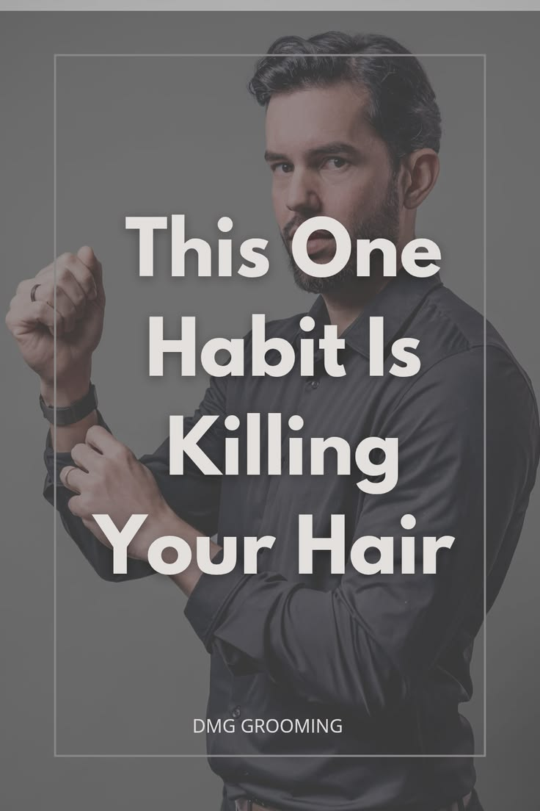

Healthy hair is an important part of men's grooming. By following a few simple habits, you can keep your hair strong and stylish.
Healthy hair isn’t just about using good products — it’s about avoiding the mistakes that damage it daily. Most men don’t realize that one small habit is silently causing hair fall.
Washing your hair too often removes the natural oils (sebum) that protect your scalp and keep your hair strong. Without these oils, your hair becomes dry, weak, and starts falling.
If your hair feels oily, don’t wash immediately. Try rinsing with water or reduce shampoo quantity.
← View More Hair Care Tips